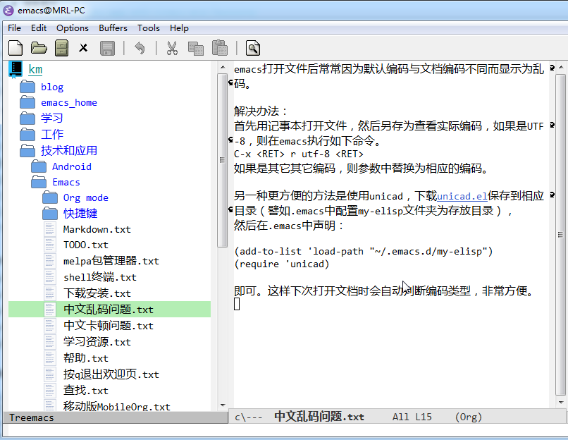

截止目前，我主要使用两款笔记，印象笔记和为知笔记，但两款笔记都有缺陷，前者不支持多层目录结构（顶多是在笔记本外再套一层笔记本组），后者的性能实在不敢恭维（新建笔记时有明显的卡顿，有时搜索要等待半天才返回结果）。于是乎，我又萌生了更换笔记系统的念头，这次我决定自己动手搭建一个。这个笔记系统有以下优点：
- 透明 每条笔记就是磁盘上的一个文件，每个笔记本就是一个文件夹
- 安全 每个终端设备(家里电脑，公司电脑，手机)都备份一套数据，当然坚果云服务器上还有一份，这样即使某个设备丢失或损坏，也很容易找回所需数据。另外坚果云还保存了一定时间段内的历史版本（免费和收费版本有差别，具体可查看他们官网）
- 不依赖于某一特定的服务 本文虽然采用坚果云，但是如有必要，读者可随意换成其它更合适的文件同步服务。
在正式开始搭建我们的笔记系统前先看一张效果图。

读者可直接从KnowledgeManagementUsingEmacs下载配置好的初始化文件及用到的包，当然也可跟随本博客一步步操作完成。
坚果云
我们先到坚果云注册个账号，下载并安装其PC客户端。客户端安装完成后，检查一下设置，建议勾选“开机自动启动”。
创建同步文件夹
新建一个文件夹km（意为Knowledge Management），用于存放所有需要同步的文件。打开坚果云客户端，点击创建同步文件夹，按提示将km设置为同步文件夹。
注意：km所在路径不要包含中文，空格等特殊字符，以免有些Emacs插件无法正常工作。以下均假设km路径为C:/km，不再重复说明。
手机同步
虽然坚果云也有Android和iOS客户端，但是有些问题，比如非txt文件只能以只读方式打开，不能编辑。由于笔者写博文时要保存为Markdown文件，需要经常在手机上编辑，所以不得已只好改用FileExplorer。具体方法是先在坚果云授权第三方WebDAV，然后用FileExplorer新增一个WebDAV连接即可。
下载Emacs
登录Emacs ftp下载页，下载emacs-26.1-x86_64.zip（写作本文时最新版本为emacs-26，此处以Windows7 64bit为例，下同）
Emacs是个绿色软件，解压缩zip包，运行bin目录下runemacs.exe即可启动Emacs。
注：不要直接运行emacs.exe的程序，因为它会多显示一个黑色窗口。
设置Emacs Home目录和初始化文件
Emacs在初始化启动时会解析一个称作初始化文件的配置文件（有关这个初始化文件，可参考Init File，Windows用户可参考Where do I put my init file?)。可以有多种方式告诉Emacs初始化文件所在的路径，本文将介绍其中相对简单的一种，即通过设置环境变量的方式。
打开cmd文件，并执行以下命令：1
2
3
4
5cd C:\km
mkdir emacs_home
setx HOME "C:\km\emacs_home"
cd emacs_home
copy NUL .emacs
其中，第3行是设置HOME环境变量，指向emacs_home。第5行新建.emacs文件（注意：由于.emacs文件名以.开头，在Windows上不能用常规方法新建）。
由于km已被配置为坚果云的同步文件夹，因此其子目录emacs_home也将自动同步到其它电脑，这样的好处是相关配置以及安装的Emacs包都自动在其它电脑上可用，无需重复配置安装。
安装笔记资源管理器
接下来，我们为Emacs添加树形控件，作为一个笔记资源管理器。Emacs有多种树形控件可供选择，但是笔者试用下来，认为Treemacs最好用。下面介绍如何通过MELPA安装treemacs：
1). 在使用MELPA前，要先在初始化文件.emacs中配置其地址：1
2
3
4(require 'package)
(add-to-list 'package-archives
'("melpa-stable" . "https://stable.melpa.org/packages/"))
(package-initialize)
2) 保存.emacs并重启Emacs，点击菜单Options | Manager Emacs Packages，首次弹出Packages窗口时可能要能等候几秒钟刷新列表。在列表中找到treemacs（可以点击左上角的Package按包名字母顺序排序以便方便查找），点击treemacs，在弹出窗口点Install。
注：如何通过MELPA安装包一文介绍了如何通过list-packages等命令安装MELPA包。
3) treemacs安装成功后，打开emacs_home.emacs.d\elpa目录，找到treemacs-x.x.x文件夹（x.x.x表示所安装的treemacs版本号，笔者当时安装的是treemacs-2.1.1），在.emacs中添加treemacs路径：1
2
3(add-to-list 'load-path "~/.emacs.d/elpa/treemacs-2.1.1")
(require 'treemacs)
(global-set-key [f8] 'treemacs)
其中第1行告诉emacs到哪里去找treemacs，第3行是绑定快捷键，按F8键显示或隐藏treemacs（笔者在多个地方看到把导航组件和F8相绑定，这大概是Emacs的惯例）。重启Emacs后，按F8调出treemacs，首次显示treemacs时会询问Project root，输入~/..（~表示emacs_home所在的目录，~/..即km目录），Project Name默认即可。
至此treemacs应该可以正常显示了，感兴趣的朋友还可在.emacs中添加以下代码，让Emacs启动时自动显示treemacs并展开km目录：1
2(run-with-idle-timer 0.2 nil 'treemacs)
(run-with-idle-timer 0.5 nil 'treemacs-RET-action)
全文搜索
当我们记录的笔记越来越多后，很可能记不起某条笔记的具体路径，这时有一个好用的搜索工具就显得特别重要。大家知道，在Unix/Linux世界有个全文搜索利器叫grep，只可惜在Window上没有（有些Shell也提供grep功能，但是总是有这样那样的问题，比如无法搜索中文）。这里推荐一个使用Elisp实现的Emacs包xah-find。它有几个优点：和Emacs无缝结合（点击搜索结果中的文件就自动在Emacs中打开此文件）；支持中文搜索；不依赖grep。缺点是不支持文件名的搜索。
手动安装xah-find
到xah-find下载源码并保存为emacs_home.emacs.d\my-elisp\xah-find.el，然后在.emacs添加相应配置：1
2
3
4
5
6
7
8
9
10(add-to-list 'load-path "~/.emacs.d/my-elisp")
(autoload 'xah-find-text "xah-find" "find replace" t)
(autoload 'xah-find-text-regex "xah-find" "find replace" t)
(autoload 'xah-find-replace-text "xah-find" "find replace" t)
(autoload 'xah-find-replace-text-regex "xah-find" "find replace" t)
(autoload 'xah-find-count "xah-find" "find replace" t)
;;在treemacs导航控件按Ctrl-f调用xah全文查找
(define-key treemacs-mode-map (kbd "C-f") 'xah-find-text)
重启Emacs便可使用xah-find了，有关xah-find的详细用法请查阅其官方文档。
优化
至此， 笔记系统基本建立完成了，然而，总体上Emacs用起来还是很不顺手，需进一步优化改进。
启动后最大化窗口
1 | (add-to-list 'default-frame-alist '(fullscreen . maximized)) |
中文问题
Emacs虽说支持多国语言，但如果不做相关配置的话，会时不时碰到各种问题，如有时中文界面变得异常卡顿，复制中文到Emacs变成乱码，保存含中文的文件时老是提示编码问题等等，不一而足。以下是解决这些问题的相关代码，供读者参考：1
2
3
4
5
6
7
8
9
10
11
12
13
14
15
16
17
18
19
20
21
22
23
24
25
26
27
28
29
30
31
32
33
34
35
36
37
38
39
40
41
42
43
44
45
46
47
48
49
50
51
52
53
54
55
56
57
58
59
60
61
62
63
64
65
66
67
68
69
70
71
72
73
74
75
76
77;;解决保存文件（含中文）时提示select coding system的问题
;; C-h C RET
;; M-x describe-current-coding-system
(add-to-list 'file-coding-system-alist '("\\.tex" . utf-8-unix) )
(add-to-list 'file-coding-system-alist '("\\.txt" . utf-8-unix) )
(add-to-list 'file-coding-system-alist '("\\.el" . utf-8-unix) )
(add-to-list 'file-coding-system-alist '("\\.scratch" . utf-8-unix) )
(add-to-list 'file-coding-system-alist '("user_prefs" . utf-8-unix) )
(add-to-list 'process-coding-system-alist '("\\.txt" . utf-8-unix) )
(add-to-list 'network-coding-system-alist '("\\.txt" . utf-8-unix) )
(prefer-coding-system 'utf-8-unix)
(set-default-coding-systems 'utf-8-unix)
(set-terminal-coding-system 'utf-8-unix)
(set-keyboard-coding-system 'utf-8-unix)
(set-selection-coding-system 'utf-8-unix)
(setq-default buffer-file-coding-system 'utf-8-unix)
;; Treat clipboard input as UTF-8 string first; compound text next, etc.
(setq x-select-request-type '(UTF8_STRING COMPOUND_TEXT TEXT STRING))
;; mnemonic for utf-8 is "U", which is defined in the mule.el
(setq eol-mnemonic-dos ":CRLF")
(setq eol-mnemonic-mac ":CR")
(setq eol-mnemonic-undecided ":?")
(setq eol-mnemonic-unix ":LF")
(defalias 'read-buffer-file-coding-system 'lawlist-read-buffer-file-coding-system)
(defun lawlist-read-buffer-file-coding-system ()
(let* ((bcss (find-coding-systems-region (point-min) (point-max)))
(css-table
(unless (equal bcss '(undecided))
(append '("dos" "unix" "mac")
(delq nil (mapcar (lambda (cs)
(if (memq (coding-system-base cs) bcss)
(symbol-name cs)))
coding-system-list)))))
(combined-table
(if css-table
(completion-table-in-turn css-table coding-system-alist)
coding-system-alist))
(auto-cs
(unless find-file-literally
(save-excursion
(save-restriction
(widen)
(goto-char (point-min))
(funcall set-auto-coding-function
(or buffer-file-name "") (buffer-size))))))
(preferred 'utf-8-unix)
(default 'utf-8-unix)
(completion-ignore-case t)
(completion-pcm--delim-wild-regex ; Let "u8" complete to "utf-8".
(concat completion-pcm--delim-wild-regex
"\\|\\([[:alpha:]]\\)[[:digit:]]"))
(cs (completing-read
(format "Coding system for saving file (default %s): " default)
combined-table
nil t nil 'coding-system-history
(if default (symbol-name default)))))
(unless (zerop (length cs)) (intern cs))))
;;解决windows复制粘贴显示乱码的问题
(when (eq system-type 'windows-nt)
(set-next-selection-coding-system 'utf-16-le)
(set-selection-coding-system 'utf-16-le)
(set-clipboard-coding-system 'utf-16-le))
;;解决中文表格不对齐的问题，使用微软雅黑字体
;; Setting English Font
(set-face-attribute
'default nil :font "Consolas 11")
;; Chinese Font
(dolist (charset '(kana han symbol cjk-misc bopomofo))
(set-fontset-font (frame-parameter nil 'font)
charset
(font-spec :family "Microsoft Yahei" :size 16)))
定制快捷键
由于用惯了其它编辑器，初步使用Emacs感觉很不习惯，就像戴着镣铐跳舞。原因是Emacs的常用编辑快捷键和流行的快捷键不同（Emacs早于Ctrl-c复制，Ctrl-v粘贴这些常用快捷键被广泛使用之时）。幸好Emacs提供一些方法，允许我们定制相关操作，使之更符合自己的习惯。关于快捷键定制方法，我在另一篇博文中有专门详细介绍，这里不再赘述。
遗留问题
这个笔记系统还有些问题善待解决：
treemacs的Project Root无法配置成相对路径
当我们在一台电脑上配置treemacs的Project root时，treemacs会缓存相关信息到emacs_home\.emacs.d\.cache\treemacs-persist中，但保存的是绝对路径（即使我们设置的时候使用相对路径也会自动被转化成绝对路径），这样在其它电脑上使用treemacs时便会找不到相关目录。我曾经尝试强制把treemacs-persist中的路径改成~/..，但是发现treemacs的刷新功能会报错。
临时解决办法：
不让坚果云同步emacs_home\.emacs.d\.cache文件夹，具体操作方法参考：坚果云如何选择性忽略部分文件/文件夹/文件类型？xah-find不能查找文件名
有时要查找的关键词位于文件名中，但xah-find只支持文件内容的搜索匹配，无法找出这些文件。手机客户端只支持普通的文本编辑，不支持笔记搜索等功能。